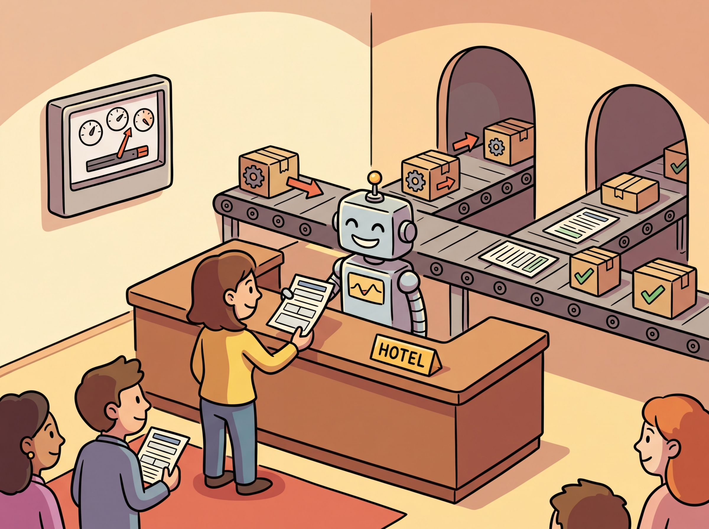
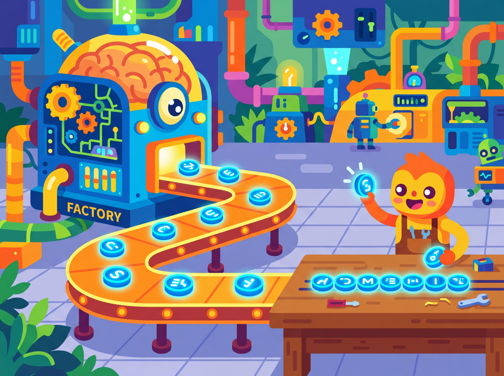

A team at a fintech startup shipped their first LLM feature using the OpenAI API. It worked beautifully in testing. Then the bill arrived: $12,000 for one month, ten times their estimate. They had missed that their retry logic resubmitted full conversation histories on every 429 error, that their prompt included 800 tokens of unused system instructions, and that Anthropic's prompt caching could have cut costs by 90% for their repetitive workload (the same 800-token system prompt was resent with every request, making up the vast majority of input tokens). The API you choose, and how you call it, is not a footnote. It is a core architectural decision that shapes your cost structure, latency profile, and reliability posture. Building on the model landscape from Section 7.1 and the inference optimization techniques from Section 8.4, this section builds the fluency you need to make that decision well: we survey the major providers, compare their architectures side by side, and establish the patterns that will carry through the rest of Part III.
1. The LLM API Ecosystem
All pricing figures in this module reflect approximate rates as of early 2025. LLM API prices change frequently, often decreasing by 50% or more within a year. Always check provider documentation for current pricing before making architectural decisions based on cost. Where possible, we express costs as ratios (e.g., "10x cheaper") rather than absolute dollar amounts to extend shelf life.
The modern LLM API ecosystem is built around a surprisingly simple pattern: you send a sequence of messages (a conversation) to an HTTP endpoint, and the model returns a completion. Under the hood, each provider tokenizes your input, runs inference through a transformer model, and decodes the output tokens back into text. Despite this conceptual simplicity, each provider has evolved distinct conventions, capabilities, and pricing models that shape how you build applications.
The major commercial providers include OpenAI, Anthropic, and Google. Each offers hosted inference with usage-based pricing, typically measured in tokens. Beyond these, cloud platforms like AWS Bedrock and Azure OpenAI provide enterprise wrappers that add compliance, networking, and billing features on top of the same underlying models. For open-source models, serving frameworks like vLLM, TGI, and Ollama expose OpenAI-compatible endpoints, creating a de facto standard. Figure 9.1.1 maps this ecosystem and the relationships between providers.
2. OpenAI Chat Completions API
The OpenAI Chat Completions API became so ubiquitous that virtually every open-source serving framework now implements an "OpenAI-compatible" endpoint. It is the rare case where a proprietary API became a de facto open standard simply because everyone got tired of learning new request formats.
The OpenAI Chat Completions API established the dominant pattern for LLM APIs. You send a list of messages, each with a role (system, user, or assistant) and content, along with generation parameters. The API returns a completion object containing the model's response, token usage counts, and metadata.
2.1 Core Request Structure

The key parameters that control generation behavior are:
model: The model identifier (e.g.,gpt-4o,o4-mini)messages: The conversation history as an array of role/content objectstemperature: Controls randomness (0.0 = deterministic, 2.0 = maximum randomness), as explored in Chapter 5 on decoding strategiestop_p: Nucleus sampling threshold (alternative to temperature)max_tokens: Maximum number of tokens to generatefrequency_penalty: Penalizes tokens based on how often they have appeared (range: -2.0 to 2.0)presence_penalty: Penalizes tokens that have appeared at all (range: -2.0 to 2.0)
Code Fragment 1 demonstrates the approach described above.
# Send a chat completion request with system and user messages
# Temperature and max_tokens control randomness and response length
from openai import OpenAI
client = OpenAI() # reads OPENAI_API_KEY from environment
# Send chat completion request to the API
response = client.chat.completions.create(
model="gpt-4o",
messages=[
{"role": "system", "content": "You are a helpful coding assistant."},
{"role": "user", "content": "Explain Python list comprehensions in two sentences."}
],
temperature=0.7,
max_tokens=150
)
# Extract the generated message from the API response
print(response.choices[0].message.content)
print(f"Tokens used: {response.usage.prompt_tokens} input, "
f"{response.usage.completion_tokens} output")temperature=0.7 and max_tokens=150 controlling response randomness and length. The system message assigns a "helpful coding assistant" role, while response.usage exposes prompt and completion token counts for cost tracking.Temperature vs. top_p: OpenAI recommends adjusting one or the other, not both simultaneously. Temperature scales the logits before softmax, while top_p truncates the distribution after softmax. Using both can create unpredictable interactions. For deterministic output, set temperature=0. For creative tasks, try temperature=0.8 to 1.2.
2.2 Streaming Responses with Server-Sent Events

For interactive applications, waiting for the entire response to complete before displaying anything creates a poor user experience. Streaming delivers tokens as they are generated using the Server-Sent Events (SSE) protocol. Each chunk arrives as a small JSON object containing the delta (the new content since the last chunk). Code Fragment 2 shows this in practice.
# Stream a chat completion using Server-Sent Events
# Each chunk delivers incremental tokens as they are generated
from openai import OpenAI
client = OpenAI()
# Send chat completion request to the API
stream = client.chat.completions.create(
model="gpt-4o",
messages=[
{"role": "user", "content": "Write a haiku about APIs."}
],
stream=True
)
collected_content = ""
for chunk in stream:
delta = chunk.choices[0].delta
if delta.content:
collected_content += delta.content
print(delta.content, end="", flush=True)
print(f"\n\nFull response: {collected_content}")When to stream: Streaming is essential for chatbots and interactive UIs where time-to-first-token (TTFT) matters more than total latency. For batch processing or backend pipelines where you need the complete response before proceeding, non-streaming calls are simpler and provide the full usage object in a single response.
2.3 The Batch API
OpenAI's Batch API allows you to submit large collections of requests (up to 50,000) that are processed asynchronously within a 24-hour window. The key advantage is a 50% cost reduction compared to synchronous API calls. To put that in concrete terms: if your evaluation pipeline processes 10,000 prompts at $0.005 per request, the Batch API drops the cost from $50 to $25 for the same results, just delivered within 24 hours instead of immediately. This makes it ideal for tasks like dataset labeling, bulk classification, or evaluation pipelines where real-time responses are unnecessary. Code Fragment 3 shows this approach in practice.
# Set up the OpenAI client and send a chat completion request
# The response object contains generated text and usage metadata
from openai import OpenAI
import json
client = OpenAI()
# Step 1: Create a JSONL file with batch requests
requests = [
{
"custom_id": f"review-{i}",
"method": "POST",
"url": "/v1/chat/completions",
"body": {
"model": "gpt-4o-mini",
"messages": [
{"role": "system", "content": "Classify the sentiment as positive, negative, or neutral."},
{"role": "user", "content": review}
],
"max_tokens": 10
}
}
for i, review in enumerate(["Great product!", "Terrible service.", "It was okay."])
]
with open("batch_input.jsonl", "w") as f:
for req in requests:
f.write(json.dumps(req) + "\n")
# Step 2: Upload and submit the batch
batch_file = client.files.create(file=open("batch_input.jsonl", "rb"), purpose="batch")
batch_job = client.batches.create(input_file_id=batch_file.id, endpoint="/v1/chat/completions",
completion_window="24h")
print(f"Batch submitted: {batch_job.id}, status: {batch_job.status}")3. Anthropic Messages API
Anthropic's Messages API follows a similar conversational pattern but introduces several distinctive design choices. System prompts are a separate top-level parameter rather than a message role. The API supports prompt caching (which can reduce costs by up to 90% for repeated prefixes), extended thinking for complex reasoning, and a robust tool use system.
3.1 Core Differences from OpenAI
The most notable architectural differences include:
- System prompt: Passed as a top-level
systemparameter, not inside the messages array - Max tokens: Required (not optional), specified as
max_tokens - Content blocks: Responses use content blocks (an array of typed objects) rather than a single string
- Prompt caching: Explicit cache control markers let you cache expensive prefixes
- Extended thinking: Built-in chain-of-thought reasoning that exposes the model's thinking process
Code Fragment 4 demonstrates the approach described above.
# Call Claude using the Anthropic Messages API
# The response includes input/output token counts for cost tracking
import anthropic
client = anthropic.Anthropic() # reads ANTHROPIC_API_KEY from environment
response = client.messages.create(
model="claude-sonnet-4-20250514",
max_tokens=200,
system="You are a helpful coding assistant. Be concise.",
messages=[
{"role": "user", "content": "Explain Python list comprehensions in two sentences."}
]
)
print(response.content[0].text)
print(f"Tokens: {response.usage.input_tokens} input, "
f"{response.usage.output_tokens} output")
print(f"Stop reason: {response.stop_reason}")claude-sonnet-4-20250514. The system prompt is a top-level system parameter (not inside the messages array), max_tokens is required, and the response uses content blocks (response.content[0].text) rather than a single string. The stop_reason field indicates why generation ended.3.2 Prompt Caching
Anthropic's prompt caching feature is particularly valuable when you repeatedly send requests with a shared prefix (for example, a long system prompt or a large document in context). By marking content blocks with cache_control, you tell the API to cache that prefix. Subsequent requests that share the same cached prefix receive a significant discount on input token costs and reduced latency. Code Fragment 5 shows this approach in practice.
# Configure and execute the API request
# Adjust parameters based on your use case
response = client.messages.create(
model="claude-sonnet-4-20250514",
max_tokens=300,
system=[
{
"type": "text",
"text": "You are an expert on the Python standard library. " * 50, # Long system prompt
"cache_control": {"type": "ephemeral"} # Cache this prefix
}
],
messages=[
{"role": "user", "content": "What is the difference between os.path and pathlib?"}
]
)
# Check cache performance
print(f"Cache creation tokens: {response.usage.cache_creation_input_tokens}")
print(f"Cache read tokens: {response.usage.cache_read_input_tokens}")cache_control markers. Caching the system prompt and reference text prefix means subsequent requests reuse that context at reduced cost, and the usage metadata reports cache creation and hit statistics.4. Google Gemini API
Google's Gemini API uses a generateContent endpoint that shares the same conversational pattern but employs different terminology. Messages are called "contents," roles are "user" and "model" (not "assistant"), and the API supports unique features like grounding (connecting to Google Search), code execution, and native multimodal input. Code Fragment 6 shows this in practice.
# Call Google Gemini using the genai SDK
# Configuration uses GenerateContentConfig for temperature and token limits
from google import genai
client = genai.Client() # reads GOOGLE_API_KEY from environment
response = client.models.generate_content(
model="gemini-2.5-flash",
contents="Explain Python list comprehensions in two sentences.",
config=genai.types.GenerateContentConfig(
temperature=0.7,
max_output_tokens=150,
system_instruction="You are a helpful coding assistant."
)
)
print(response.text)
print(f"Tokens: {response.usage_metadata.prompt_token_count} input, "
f"{response.usage_metadata.candidates_token_count} output")5. Enterprise Wrappers: AWS Bedrock and Azure OpenAI
Enterprise cloud providers wrap the underlying models with additional infrastructure for security, compliance, and billing. AWS Bedrock provides access to models from Anthropic, Meta, Mistral, and others through a unified API with IAM authentication, VPC endpoints, and consolidated AWS billing. Azure OpenAI deploys the same OpenAI models within Microsoft's cloud, adding features like content filtering, private networking, and regional data residency.
The following example shows how to call Claude on AWS Bedrock using boto3. The key difference from the direct Anthropic API is authentication (IAM credentials instead of an API key) and the endpoint configuration:
# Call Claude on AWS Bedrock using boto3 with IAM authentication
# The request body follows the Anthropic Messages API format
import boto3
import json
# Bedrock uses IAM credentials (configured via AWS CLI or environment variables)
bedrock = boto3.client(
service_name="bedrock-runtime",
region_name="us-east-1"
)
body = json.dumps({
"anthropic_version": "bedrock-2023-05-31",
"max_tokens": 256,
"messages": [
{"role": "user", "content": "Explain what an API gateway does in two sentences."}
]
})
response = bedrock.invoke_model(
modelId="anthropic.claude-sonnet-4-20250514-v1:0",
body=body,
contentType="application/json",
accept="application/json"
)
result = json.loads(response["body"].read())
print(result["content"][0]["text"])boto3. The authentication uses IAM credentials (not API keys), and the model is invoked through invoke_model with a JSON body matching the Anthropic message format.API version drift: Enterprise wrappers sometimes lag behind the direct provider APIs by days or weeks. A feature available on api.openai.com may not yet be available on Azure OpenAI (or may require a specific API version string). Always check the enterprise wrapper's documentation for supported features and versions before building against them.
All three major providers (GPT-4o, Claude, Gemini) now support image input alongside text. You can send images as base64-encoded data or URLs in the messages array. While this section focuses on text APIs, be aware that these same endpoints handle multimodal input. Consult each provider's documentation for image formatting details, token counting for images, and supported image formats.
6. Open-Source Serving: The OpenAI-Compatible Pattern
A powerful convention has emerged in the open-source ecosystem: serving frameworks expose an API that mimics the OpenAI Chat Completions format. This means you can point the OpenAI Python SDK at any compatible server by changing the base_url, and your existing code works without modification. Frameworks like vLLM, Text Generation Inference (TGI), and Ollama all support this pattern. Code Fragment 8 shows this approach in practice.
# Send a chat completion request to the OpenAI API
# The messages list follows the multi-turn conversation format
from openai import OpenAI
# Point the OpenAI client at a local vLLM server
client = OpenAI(
base_url="http://localhost:8000/v1",
api_key="not-needed" # Local servers often skip auth
)
# Send chat completion request to the API
response = client.chat.completions.create(
model="meta-llama/Llama-3.1-8B-Instruct",
messages=[
{"role": "user", "content": "Explain Python list comprehensions in two sentences."}
],
temperature=0.7,
max_tokens=150
)
# Extract the generated message from the API response
print(response.choices[0].message.content)base_url. This OpenAI-compatible pattern lets existing code, libraries, and tooling work with self-hosted open-source models without modification.The portability benefit: Because the OpenAI-compatible API has become a de facto standard, code written against the OpenAI SDK can run against local models, cloud providers, or even custom fine-tuned models with zero changes to the application logic. Only the base_url and model name change. This is a deliberate design choice by the open-source community to reduce switching costs.
7. Provider Comparison
The following table summarizes the key differences across the major providers. Understanding these differences helps you choose the right provider for your use case and design portable abstractions.
| Feature | OpenAI | Anthropic | Google Gemini |
|---|---|---|---|
| Endpoint | /chat/completions |
/messages |
generateContent |
| System prompt | Message with role "system" | Top-level system param |
system_instruction config |
| Assistant role name | assistant |
assistant |
model |
| Max tokens | Optional | Required | Optional |
| Streaming | SSE (stream=True) |
SSE (stream=True) |
SSE (stream=True) |
| Prompt caching | Automatic | Explicit markers | Context caching API |
| Batch API | Yes (50% discount) | Yes (Message Batches) | No dedicated batch |
| Tool use | Function calling | Tool use | Function declarations |
Despite the naming differences summarized above, all providers follow the same fundamental lifecycle. Figure 9.1.2 illustrates this universal request/response cycle.
8. Authentication and Rate Limits
Every provider requires authentication, typically via an API key passed in the Authorization header. Enterprise providers like Azure OpenAI also support Azure Active Directory tokens. Rate limits are enforced at multiple levels: requests per minute (RPM), tokens per minute (TPM), and sometimes requests per day (RPD). Exceeding these limits results in HTTP 429 (Too Many Requests) responses.
Never hardcode API keys. Store them in environment variables, secrets managers (like AWS Secrets Manager or HashiCorp Vault), or .env files that are excluded from version control. A leaked API key can result in unauthorized usage and significant charges on your account.
Rate limit headers returned with each response tell you how much capacity remains. Monitoring these headers allows you to implement proactive throttling rather than waiting for 429 errors:
x-ratelimit-remaining-requests: Requests remaining in the current windowx-ratelimit-remaining-tokens: Tokens remaining in the current windowx-ratelimit-reset-requests: Time until the request limit resetsx-ratelimit-reset-tokens: Time until the token limit resets
9. Choosing Between Providers
The right provider depends on your specific requirements. Consider these factors when making your decision:
- Model capability: For the most complex reasoning tasks, compare the latest models from each provider on your specific use case. Benchmarks help, but real evaluation on your data is essential.
- Pricing: Input and output tokens are priced differently. Anthropic and Google tend to offer competitive pricing for large-context workloads. OpenAI's Batch API cuts costs by 50% for non-real-time tasks.
- Context window: Gemini supports up to 1M tokens; Anthropic's Claude supports 200K; OpenAI's GPT-4o supports 128K. Longer contexts enable retrieval-free processing of large documents.
- Compliance: Enterprise wrappers (Bedrock, Azure) offer HIPAA, SOC 2, and data residency guarantees that direct API access may not.
- Latency: Test time-to-first-token and total generation time from your deployment region. Geographic proximity to provider data centers matters.
Multi-provider strategy: Many production systems use multiple providers. A common pattern is to route simple tasks to smaller, cheaper models and reserve expensive frontier models for complex queries. We will explore this routing pattern in detail in Section 9.3.
Knowledge Check
Show Answer
system parameter in the API call, not as a message with the "system" role inside the messages array. This is a key architectural difference from the OpenAI API.Show Answer
Show Answer
base_url parameter. This means existing application code works without modification when switching between providers, reducing switching costs and making local and cloud deployments interchangeable.Show Answer
Show Answer
Pick any code example from this section and try these experiments:
- Change the
temperaturefrom 0.0 to 1.0 and run the same prompt five times. Compare how the outputs vary. At what temperature do you start seeing meaningfully different responses? - Set
max_tokensto 10 on a question that requires a long answer. Observe how the model truncates its response mid-sentence. This is why production code must handle incomplete responses gracefully. - Send the same prompt to two different providers (e.g., OpenAI and the vLLM local example). Compare the outputs, latency, and token counts. Note which differences are cosmetic and which are substantive.
Key Takeaways
- Universal pattern: All major LLM APIs follow the same core pattern: send a conversation (list of messages) with generation parameters via HTTP POST, receive a JSON response with the completion and token usage.
- Provider-specific details matter: Despite the shared pattern, each provider uses different field names, places system prompts differently, and offers unique capabilities like prompt caching (Anthropic), grounding (Google), or batch processing (OpenAI).
- Streaming is essential for UX: Server-Sent Events allow token-by-token delivery, which is critical for interactive applications where time-to-first-token matters.
- The OpenAI-compatible format is the de facto standard: Open-source serving frameworks (vLLM, TGI, Ollama) all expose this format, making the OpenAI SDK a universal client.
- Enterprise wrappers add compliance, not models: AWS Bedrock and Azure OpenAI wrap the same underlying models with enterprise features like private networking, IAM, and data residency.
- Cost optimization starts with API choice: Batch APIs, prompt caching, and model routing can each reduce costs by 50% or more for appropriate workloads.
Now that you can call any major LLM API and stream responses, the next question is: how do you make the model return structured, machine-readable output instead of free-form text? And how do you let the model interact with external systems through function calls? Section 9.2 tackles both of these challenges.
Migrating from Single Provider to Multi-Provider Architecture
Who: A backend engineering team at a mid-stage SaaS startup building an AI-powered customer support platform.
Situation: The team had built their entire product on OpenAI's Chat Completions API, processing roughly 50,000 requests per day across ticket classification, response drafting, and sentiment analysis.
Problem: A 45-minute OpenAI outage during peak hours caused a complete service failure, resulting in hundreds of unanswered support tickets and an escalation from their largest enterprise customer.
Dilemma: They could add Anthropic as a fallback (requiring code changes for the different message format) or adopt a unified abstraction layer like LiteLLM (simpler switching but adding a dependency). They also considered self-hosting an open model via vLLM as a third tier.
Decision: They chose LiteLLM as the abstraction layer with three providers: OpenAI as primary, Anthropic as secondary, and a self-hosted Mistral model via vLLM (using the OpenAI-compatible endpoint) as a last resort for basic classification tasks.
How: They wrapped all API calls through LiteLLM, configured automatic failover with provider-specific rate limit detection, and standardized on the OpenAI message format internally. The vLLM endpoint required no code changes because it exposed the same API shape.
Result: Over six months, the system experienced zero complete outages despite three individual provider incidents. Response drafting quality remained within 2% across providers, and the self-hosted fallback handled 12% of total traffic during peak load, reducing API costs by $4,200/month.
Lesson: The OpenAI-compatible API format is a de facto standard that makes multi-provider architectures practical; investing in provider abstraction early prevents painful migrations later.
The OpenAI Chat Completions API format has become so ubiquitous that even competitors adopt it. vLLM, Ollama, and dozens of other serving tools expose OpenAI-compatible endpoints, making the OpenAI Python SDK a "universal remote" for models it never trained.
Unified multi-provider protocols. The proliferation of provider-specific API formats has driven projects like LiteLLM and the emerging Model Context Protocol (MCP) to standardize tool calling and message formats across vendors. As of 2025, no single standard has won, but convergence toward OpenAI-compatible endpoints continues to accelerate, with vLLM, SGLang, and Ollama all adopting this format.
Semantic caching at the API layer. Rather than caching exact prompts, research teams at companies like Zilliz and Gptcache are exploring embedding-based semantic caches that recognize when a new prompt is "close enough" to a previously answered one. Early results show 40 to 60% cache hit rates on production workloads with acceptable quality degradation.
Disaggregated inference APIs. Providers are beginning to separate prefill (prompt processing) from decode (token generation) into distinct API tiers, allowing cost optimization based on workload profile. This mirrors the disaggregated serving architectures discussed in Section 8.4.